Pistolas
Heckler y Koch VP70
Fabricada por Heckler & Koch Inc., Alemania. Su cargador admite hasta 18 balas 9mm parabellum y es útil contra
zombis y perros zombis.
Es la pistola que usa Leon desde el principio; si
se le consigue la culata, esta se volverá más poderosa y
será capaz de disparar tres balas seguidas, permite conmutar entre automático y manual. Eficaz contra los
zombis. Leon encuentra las piezas para acoplárselas a la pistola en un cajón, en el segundo piso de la
comisaría, al lado de la biblioteca.
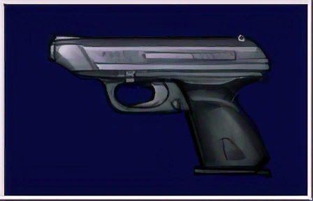
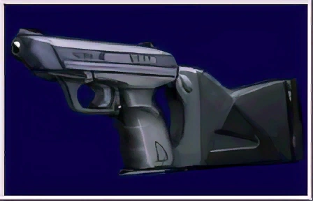
Browning HP
Fabricada por FN inc. en Bélgica. Admite un máximo de 13 balas en su cargador. Se la da Leon a Claire cuando
escapan en el coche de policía al comienzo del juego. A diferencia de la VP70 no se le encuentra una
actualización, por eso sólo es efectiva contra zombis. También es usada por Ada, aunque no se sabe dónde la
obtuvo.
 Beretta M92FS
Beretta M92FS
Fabricada por Beretta Gardone val Trompia en Italia. Admite un máximo de 15 balas en su cargador. Esta aparece
únicamente en el minijuego Extreme Battle como una de las armas de Chris Redfield. Eficaz contra los zombis, a
diferencia de la Browning HP y la VP70, esta arma es capaz de efectuar un disparo crítico al azar, lo que
permite decapitar zombis y ahorrar municiones.
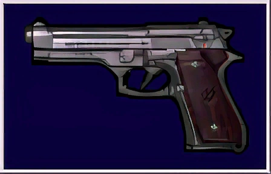
Escopetas
Remington M1100-P
Es una versión más pequeña de la M1100 con cañón recortado. Utiliza hasta 5 cartuchos de calibre 12 y es
práctica contra zombis y lickers.
La encuentra Leon en el cuerpo de Kendo o en la oficina
S.T.A.R.S. (escenario A) o en la mesa del vestíbulo de
la comisaría (escenario B).
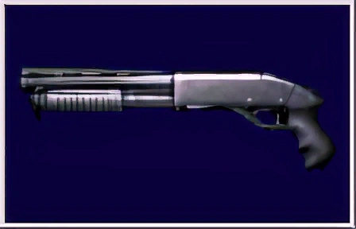
Remington M1100-P Custom
El cañón más largo produce disparos más concentrados. Especialmente útil para atacar a grupos de zombis y a
otros enemigos de tamaño medio-grande. Leon encuentra las piezas para acoplárselas a la escopeta al llegar a
la fábrica abandonada B1, en el cuerpo de un muerto.

Especiales
Ballesta
Una potente ballesta, principalmente para la caza mayor. Dispara tres flechas a la vez de un cargador de 18 y
solo es útil contra zombis ,cuervos y William Birkin . La encuentra Claire en el cuerpo
de Kendo o en la
cabina en la otra area de ciudad B (escenario A) o en la oficina S.T.A.R.S. (escenario B).
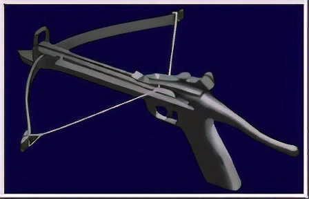
Lanzadescargas
Usada para repeler a los animales experimentales. Se carga con cartuchos eléctricos y tiene un rango de 10
pies. Si disparas de forma repetida contra un enemigo le causas la muerte. Muy útil contra Birkin2. La
encuentra Claire al llegar a la fábrica abandonada B1, en el cuerpo de un muerto.
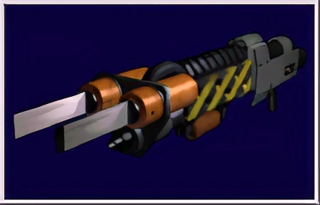
Ametralladora MAC-11
Fabricado por Military Aramorment Inc. Utiliza cartuchos DOT380 y es útil contra todo tipo de enemigo. La
puede conseguir Leon y Claire en el almacén de armas o en la sala donde se tienen que colocar las dos huellas.
También se obtiene, con munición infinita, completando el juego en menos de 3 horas con rango A o B. La
munición se cuenta en forma de un porcentaje.
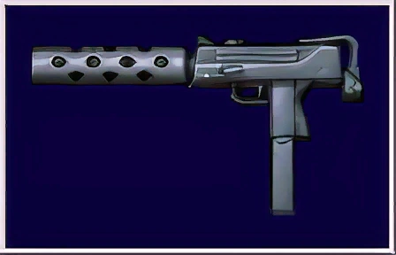
Lanzallamas
Es encontrado por Leon S. Kennedy en el nivel B4 del laboratorio de William Birkin, en el interior del
armario. En los dormitorios de un científico, Leon, alternativamente, puede usar esto para quemar la planta de
tentáculos el bloqueo de la salida de aire, en lugar de usar el encendedor. Al igual que el lanzadescargas, la
munición se cuenta como un porcentaje, ya que no tiene munición de repuesto que se encuentran en otros
lugares.
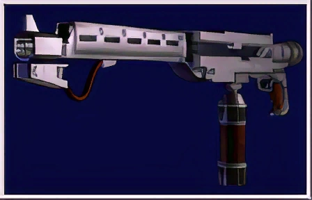
Pesadas
Lanzagranadas M79
La culata recortada causa un mayor retroceso. Fabricada en EE.UU. Puede utilizar varios cartuchos (ácidos,
incendiarios y explosivos) dependiendo su utilidad del tipo usado. La encuentra Claire en la oficina
S.T.A.R.S. (escenario A) o en la mesa a la entrada de
la comisaría (escenario B) y es un poco más potente que
la escopeta.
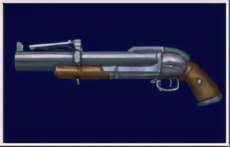
Ametralladora Gatling
Un arma potente que pulveriza balas sobre los objetivos. Su único defecto es que para empezar a disparar debe
girar antes durante un tiempo. La puedes conseguir con munición infinita si completas el juego en menos de 2
horas y media con rango A o B.
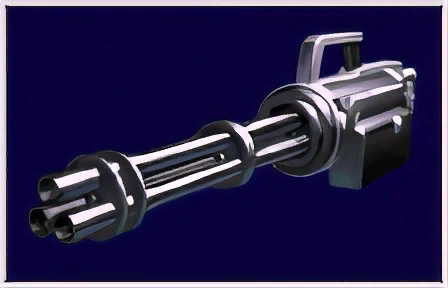
Lanzacohetes FIM-92 Stinger
Un disparo de esto podría matar a cualquier enemigo. Lo consigues cuando luchas contra la mutación de MrX (lo
lanza Ada ). También puedes obtenerlo con munición
infinita si completas el juego en menos de 2 horas y media
con rango A o B.
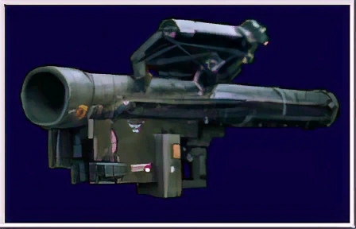